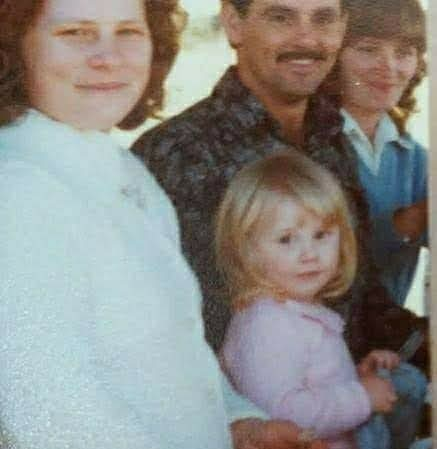
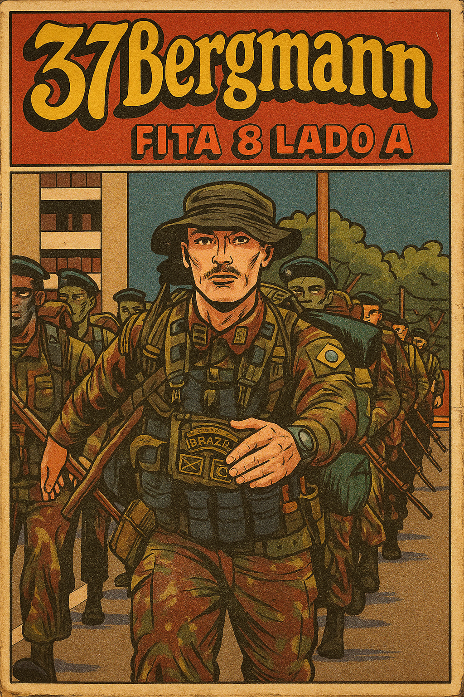

❝ Senhores, eu sou o militar que os senhores mais verão esse ano.
O Sargenteante Bergmann atuou como Sargento instrutor durante o ano de 2024 na Base Administrativa da Guarnição de Santa Maria. Entretanto, Bergmann participou das diversas atividades do Contingente.
Antes mesmo de se tornar um militar, Augusto foi dançarino de CTG.
Bergmann foi o responsável por preparar o Campo de Treinamento para os recrutas do ano de 2024.
O Sargento Bergmann fez check-ins em lugares como o Alemães Sorvetes localizado na R. Osvaldo Aranha, cidade de Venâncio Aires em 28 de abril de 2017. Segundo informações retiradas diretamente de seu perfil da rede social Facebook, o qual é completamente condizente, Bergmann frequentou Acqua Lokos em Capão da Canoa, em 22 de janeiro de 2017.
Bergmann mostrou-se curtir diversas séries de televisão como True Blood, Vikings, Breaking Bad, Supernatural, Os Simpsons, Mr. Bean, The Walking Dead, The Vampire Diaries, The Big Bang Theory, Spartacus, Game of Thrones. A sua lista de filmes incluem Piratas do Caribe, Zumbilandia, Jurassic Park, O Caçador e a Rainha do Gelo, Velozes & Furiosos, Como Treinar o Seu Dragão, Chappie, Chiquititas, Deuses do Egito, Ted, Premonição, Diário de um Banana, Hércules,

O avô materno de Augusto, o Arneldo Bergmann com o uniforme militar com sua filha Marciane Bergmann (mãe de Augusto Bergmann) em seu colo.
O sargento Bergmann segue Colton Haynes (Teen Wolf).

Wake up, Bergmann!
O Bergmann seguiu na carreira militar e concluiu o CFC. Adiante disso, sua trajetória o levou a se tornar um terceiro sargento temporário e principal instrutor dos recrutas.
Vídeo do CFC no 29º Batalhão de Infantaria Blindado, onde Bergmann concluiu o Curso de Formação a Cabos no ano de 2019.
Em outubro de 2024, Bergmann terminou o seu período como Terceiro Sargento no Exército Brasileiro e iniciou uma carreira na Brigada Militar.

Redes sociais:
Augusto Cunha

gusto_cunha

August0Bergmann
#NewProfilePic pic.twitter.com/52ZQ9erDCK
— Augusto Bergmann (@August0Bergmann) May 11, 2020